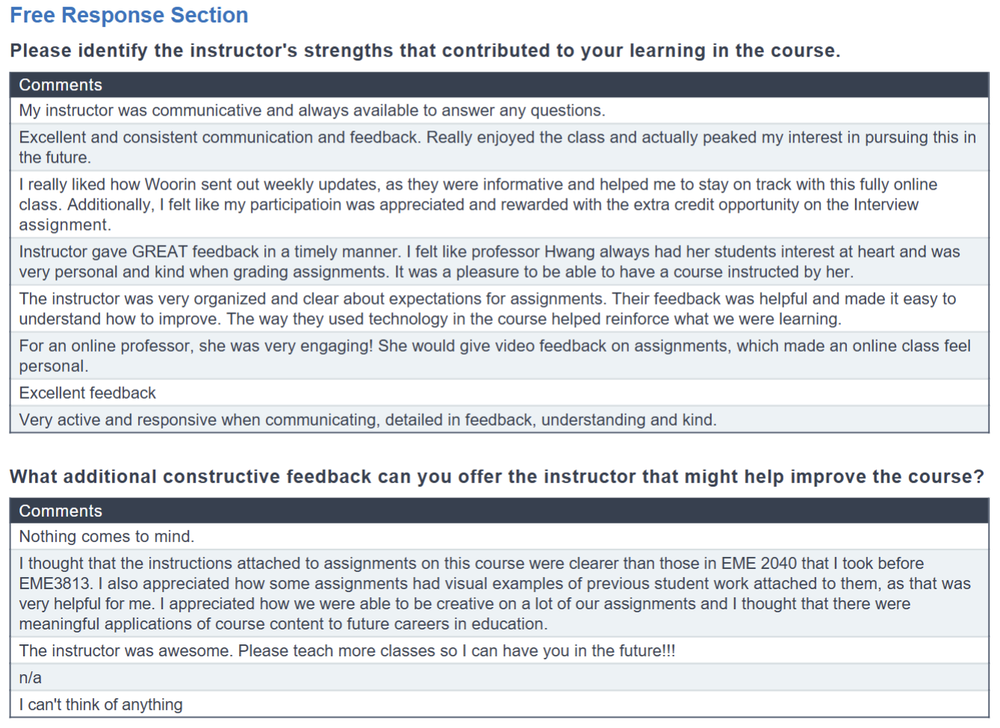
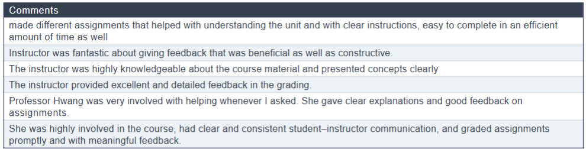
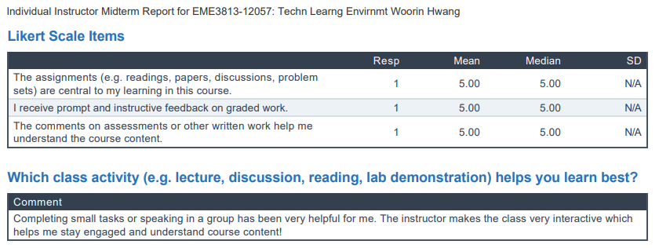

Teaching
"Tell me and I forget. Teach me and I remember. Involve me and I learn." – Benjamin Franklin
Instructor of Record
- Technology-enhanced Learning Environment (EME 3813) F2F
- Technology-enhanced Learning Environment (EME 3813) Online
- Introduction to Educational Technology (EME 2040) Online
- Introduction to Educational Technology (EME 2040) Online



Teaching Assistant
-
Distance Teaching and Learning (EME 6458)
-
Seminar in Educational Media (EME 7938)
-
Machine Learning
K‑12 Teaching
-
Full-time English Teacher
-
Part-time English Teacher
-
Part-time English Teacher & After-School Instructor
-
Full-time English Teacher
-
Full-time English Teacher